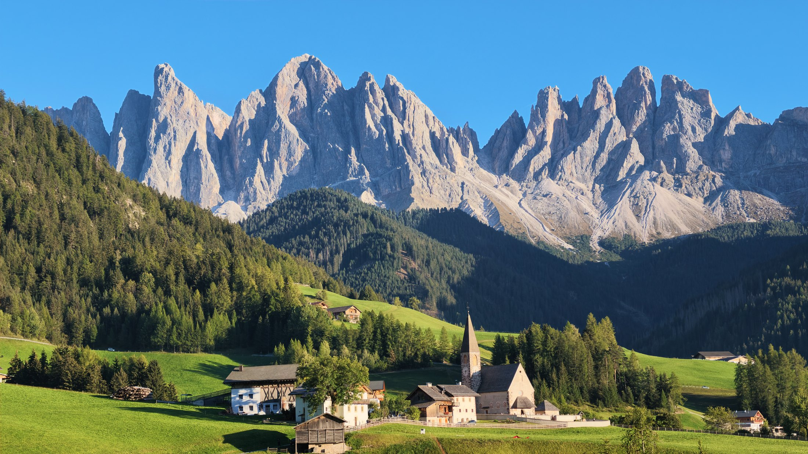

意大利 / 山野
多洛米蒂
赶上山谷里的最后一抹夕阳。

我的秋日旅行
一次出发，
收集了这些回忆。
米兰出发，再回到米兰。
PLACES & MOMENTS
自己拍的照片，自己走过的旅程。点开照片，看看当时的故事。
赶上山谷里的最后一抹夕阳。
在街巷里，与文艺复兴相遇。
两千年的故事，就在眼前。
看过卢浮宫，也记得那顿法餐。
最后一天，留给大教堂和好天气。
THINGS I BROUGHT BACK
把这次旅程里记住的小事，留给下次出发的自己。
下次，
把行程排得
再慢一点。
这次从米兰出发，最后又飞回米兰回国，兜了一个圈，也花了不少时间赶车。下次想试试不同城市进出的路线，把时间留给目的地。
多洛米蒂两头都要赶路，真正完整游玩的时间只有一天。山谷日落、刀锋山和休斯高原都很美，下次想多住几晚，慢慢走。
佛罗伦萨和罗马的艺术值得仔细欣赏。出发前了解一点文艺复兴的故事，参观时配上讲解，会比走马观花更有收获。
佛罗伦萨的巴师傅、罗马梵蒂冈附近的 Alice 披萨，还有巴黎的 La Jacobine。这几家，是我想在旅行手记里留下的味道。
还没去过的地方，
留给下一次出发。